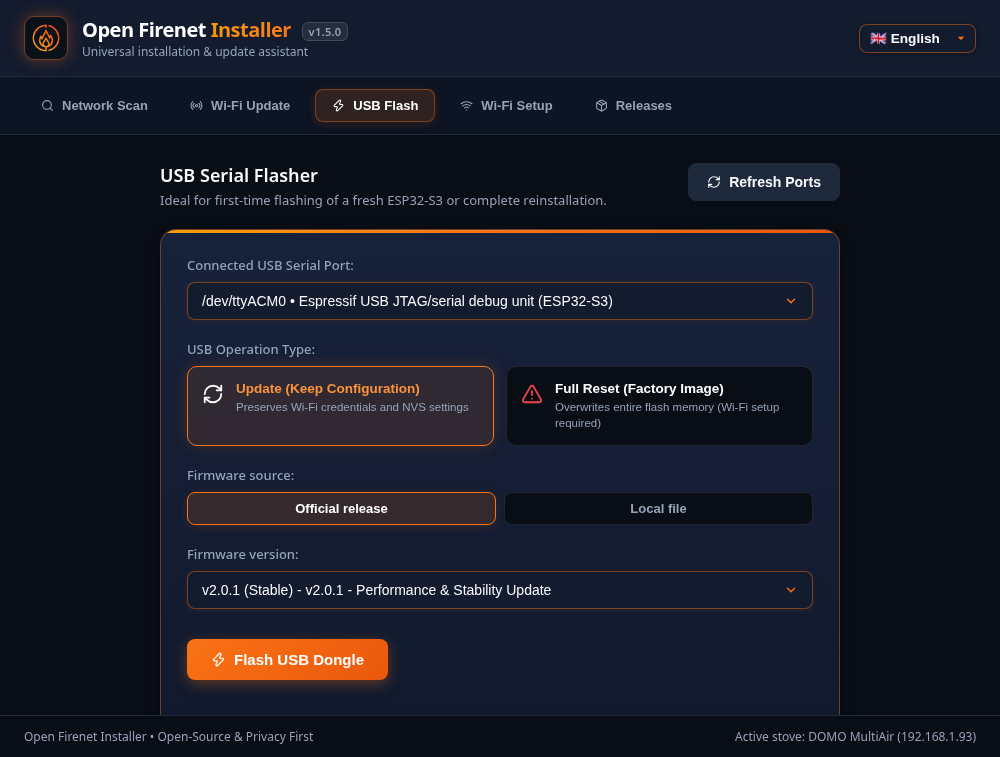
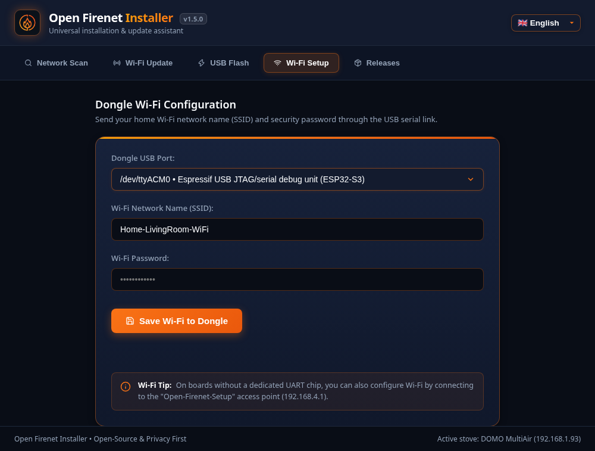
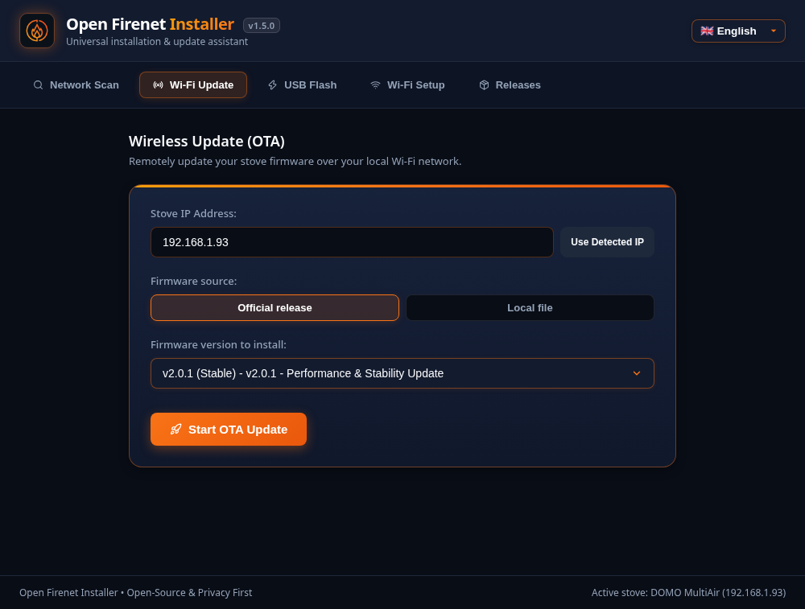

Get started
From an empty board to a stove you control from your browser, in five steps. Count about half an hour.
-
Check your stove's firmware version
On the stove screen, open the Info menu and read the mainboard software version (for example 2.27 or 2.29). Then look it up on the compatibility page.
-
Get the hardware
You need two things:
- An ESP32-S3 development board with native USB. The chip must be an ESP32-S3: an ESP32, ESP32-C3 or a board with only a UART bridge chip (CH340, CP2102) will not work.
- A USB data cable from the board to the stove's USB-A socket. Charge-only cables do not work.
Which board to buy, and the ones known to work: see Hardware.
Boards with two USB ports: the stove must be plugged into the port labelled "USB" or "USB OTG" (the chip's native USB). The port labelled "UART" or "COM" is only for flashing and logs. This is the most common mistake.
-
Flash the board with the installer
Download the installer for your computer from the releases page, plug the board into your computer and open the USB Flash tab. The installer downloads the latest official firmware, checks its signature and writes it to the board.

System File Windows open-firenet-installer-windows-x86_64.exemacOS (Apple Silicon) open-firenet-installer-macos-arm64macOS (Intel) open-firenet-installer-macos-x86_64Linux open-firenet-installer-linux-x86_64.AppImageor the.debpackageOn Linux, your user must be in the
dialout(oruucp) group to access USB serial ports. If the board is not found, hold its BOOT button while plugging it in. -
Connect the bridge to your Wi-Fi
Either enter your Wi-Fi name and password in the installer's Wi-Fi Setup tab, or do it from your phone:
- Join the Wi-Fi network
Open-Firenet-Setupthat the board creates (no password). - The setup page opens by itself. If not, browse to
http://192.168.4.1. - Pick your home network (2.4 GHz), enter its password and save. The board restarts on your network.

- Join the Wi-Fi network
-
Plug it into the stove
Connect the board's native USB port to the stove's USB socket, then switch the stove off and on at the mains. After about a minute, open
http://open-firenet.local(or the address shown by the installer's Network Scan tab).The page shows your stove model and its state. It has three tabs: Stove (the dashboard and controls), Bridge (Wi-Fi, MQTT, restart) and Diagnostics (link with the stove, log, all values). If a banner says the bridge is not connected to the stove, see Troubleshooting.
Updating later
Once the bridge is on your network, the installer's Wi-Fi Update tab installs new versions without unplugging anything. Your computer and the bridge must be on the same network; if the update times out, see the network requirements.
